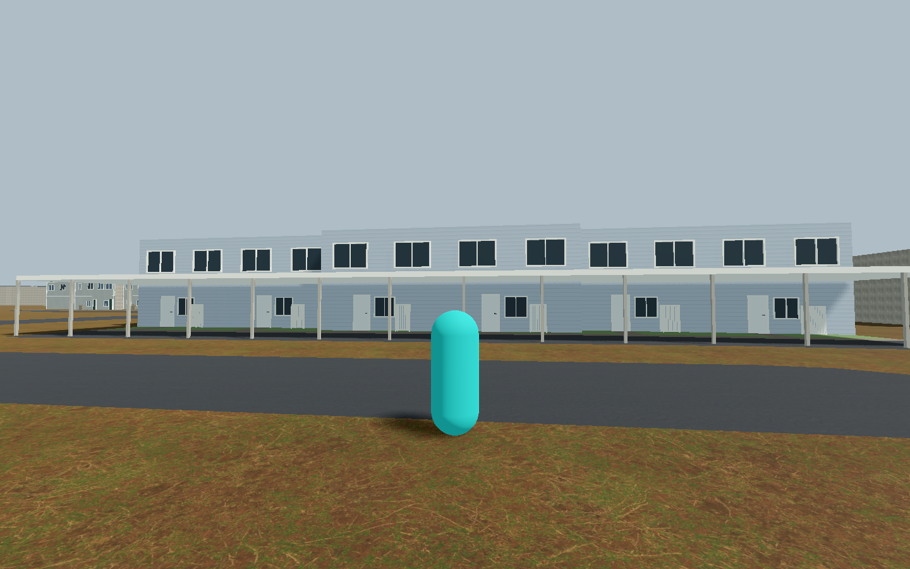
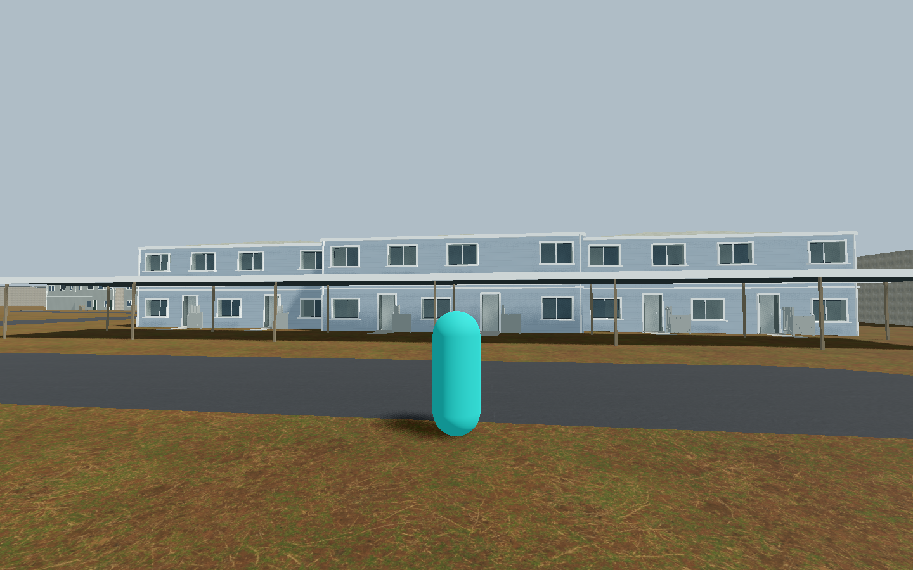

Independent visual review: provisional retain for branch A/B, not whole-building quality PASS or an unqualified improvement. First shared-family study, run 002. Exact source wall/roof identity and footprint; observed west groups only. Canopy is a render-only associated structure with inferred freestanding supports and extent, not a structural attachment or receiver-ownership claim. Hidden faces and cropped canopy endpoints remain unknown.


March 2025 reference remains private. Window cadence, dimensions, shallow roof and canopy proportions are inferred. Canopy fascia is paler and less weathered than the reference; earth-colored under-canopy ground loses the photographed paved parking versus rear lawn/walk distinction, which is also less legible than the baseline strips. Screen depth remains simplified. Original colliders and controls remain unchanged. Run 001 failed camera settlement before pixels; no guard was relaxed. No production or whole-building acceptance.
{kind=link}
{kind=link}